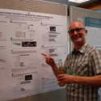

This group of faculty conduct research in all areas of Biotechnology and the areas of Molecular, Cellular, Microbiology, Genetics, Physiology and Developmental Biology.
Research Interests: Aflatoxins are carcinogenic to humans and other animals, and accumulation of aflatoxins in peanut kernels can influence marketing of peanut and peanut products. Breeding for varieties resistant to A. flavus has not been very promising, as evidenced by serious economic losses in the peanut market due to aflatoxin outbreaks year after year. Breeding resistant cultivars would be an effective approach to preventing aflatoxin accumulation in peanuts. However, traditional breeding is a costly, laborious and time consuming process. The goal of this research is to transform peanuts with glucanase and chitinase genes against A. flavus, the most common aflatoxin producing Aspergillus sps. found in peanuts and other food and agricultural products.
Research also include expression of pathogenesis-related (PR) proteins such as chitinase and β-1,3-glucanase and aflatoxin at cellular and subcellular levels in susceptible, tolerant, and transgenic peanut lines by immunocytochemical approaches. The intellectual meritof this research is to produce basic information about a little studied area, the characterization of PR proteins and disease resistance in transgenic peanuts. Basic molecular and biochemical studies in tolerant/transgenic peanut varieties will provide information on tolerance/resistance and on prevention of aflatoxin accumulation in peanuts. The in Situ localization of induced molecules in the presence of foreign genes from the cyto and immunocytochemical approaches will form the basis for future research in the development of biological control alternatives for A. flavus in peanuts. Broader impactsinclude the research’s potential to make progress in developing an effective approach to eliminating aflatoxin accumulation in peanuts. Moreover, developing new peanut transgenic cultivars with resistance using genetic engineering will have great potential in breeding resistance to A. flavus infection, and the problem of aflatoxin management could be solved if peanut cultivars are resistant against A.flavus colonization. Also, the research goal is to train students in hands-on experiments in molecular, biochemical and immunocytochemical techniques and to engage them in a research lab environment.
Research interests: Our goal is to understand molecular mechanism(s) used by vascular tissue to resist substrate contact loss. Our model system utilizes crude hemorrhagic snake venom to induce cellular detachment of human umbilical vein endothelial cells. We are particularly interested in the function of metallothioneins during this process. The specific aims of our research include the following: 1) Identify venom protein(s) which induce MT gene activation, 2) Determine metallothioneins involvement in endothelial focal contact disassociation during hemorrhagic venom stimulation, 3) Determine signaling pathways mediated by metallothioneins after exposure to hemorrhagic venom.
Research interests: In my lab we study the potential role of mitochondria in cancer formation. The majority of cancers—including cancers of the colon, breast, bladder, head and neck, lung, prostate and ovary—have abnormalities in their metabolism and exhibit somatic mutations in the mitochondrial chromosome (mtDNA). Cancer cells are largely glycolytic, deriving their cellular energy, ATP, from glycolysis rather than mitochondrial respiration. Cancer cells are also frequently defective in programmed cell death (apoptosis), which is a mechanism used by normal tissue to prevent the accrual of damaged cells. Normal mitochondria function is necessary for both aerobic ATP production and programmed cell ceath. Defects in mitochondria will also generate increased levels of reactive oxygen species via the electron transport chain, bringing in a mutagenic source for DNA damage in cancer genes such as proto oncogenes and tumor-suppressor genes. Thus, defects in mitochondria potentially promote cancer cell development in these three mechanisms. Over 65% of cancers examined show mutations in the mitochondrial chromosome (mtDNA), which codes for components of the electron transport chain. Do these mtDNA mutations play a causal role in cancer formation, or are they merely a side effect in the abnormal cancer cell microenvironment?
To address this question, we characterize somatic (not inherited, acquired during the lifetime of the individual) mtDNA mutations in cancer. What research projects do you have currently?
Bioinformatics project — alignment of interspecies mitochondrial a.a. sequences to assess significance of a.a. changes in cancer residues; project 2 — alignment of mitochondrial rRNA and tRNA sequences to assess significance of RNA changes in cancer associated mtDNA sequences. Being an author on a paper is a possibility for the student but not a guarantee.
Lab project — use of RT PCR to determine the pattern of ROS (reactive-oxygen species) DNA damage in the mitochondrial chromosome
Statistical analysis — examination of somatic mtDNA mutation from aged, pre-neoplastic tissue
Research interests: The Davis Lab studies the developmental mechanisms of vertebrate morphogenesis, with a emphasis on musculoskeletal complexes such as paired appendages (fins and limbs) and jaws. We take a broadly comparative approach, utilizing basal actinopterygians such as the North American paddlefish Polyodon spathula, chondrichthyans, and even basal tetrapods to test hypotheses about the evolution of development. Click for more information about his research (Back to top)
Research interests: A leucine responsive protein (Lrp) has been demonstrated to play a role as a global regulator of cellular metabolism in response to leucine in the intestinal bacterium Escherichia coli. In E. coli, Lrp binds DNA to activate or repress the gene expression for up to thirty operons and has likely evolved to suit its particular biological niche. Some genes involved include amino acid biosynthesis and the adherence fimbriae structure. This proposal speculates about the possible role of Lrp as a global regulator in another bacterium,Pseudomonas aeruginosa. P. aeruginosa is found ubiquitously and harmlessly throughout the environment but can be an important opportunistic, human pathogen. The most important aspect of P. aeruginosa disease is, once an internal infection is in place within its human host, there is no known cure or effective therapy. Pseudomonas is protected by two membranes surrounded by an extremely thick, mucoid structure, which helps it to be resistant to virtually all known antibiotic therapies and disinfectants. It also produces adherence fimbriae (pili), which are critical for the initial infection. Based on the E. coli profile, study of the Lrp protein may allow us to identify an important factor in the regulation of genes involved in cellular metabolism and possibly pathogenesis in P. aeruginosa. Specifically, this study seeks to determine the number and diversity of genes acted upon by Lrp to determine if Lrp is a global or local regulator of gene function in P. aeruginosa. (Back to top)
Research interests: My research interest is to study the molecular mechanism of human chromosomal diseases, including 9p deletion syndrome. The terminal deletion of the short arm of human chromosome 9 (9p-) is associated with trigonocephaly, severe mental retardation, and dysmorphic facial features. The gene(s) responsible for the 9p- syndrome remain to be elucidated. To date, we have identified over 270 highly conserved non-coding sequences between the human and mouse or between the human and zebrafish using database analysis. These sequences are located within the critical region for 9p- syndrome. Studies have shown that highly conserved non-coding sequences may contain regulatory elements, which enhance (enhancers) or suppress (suppressors) gene expression. We are in the process of testing some of these 270 highly conserved non-coding sequences using a dual luciferase assay. In this assay, the luciferase gene, isolated from the firefly, converts luciferin to oxyluciferin while emitting fluorescent light. Therefore, the higher the luciferase activity is the brighter the fluorescent light will be. By inserting our putative regulatory sequences in front of the luciferase gene, we are able to detect and measure an increase or a decrease of the luciferase activity as compared to the activity of a second fluorescent gene, Renilla gene, isolated from sea pansy. Polymerase chain reaction, gene cloning, mammalian tissue culture, and gene transfection techniques are used, in addition to the luciferase assay method. The ultimate goal for this approach is to find regulate sequences for the most likely candidate genes responsible for the 9p- syndrome. (Back to top)
Research interests: My research focuses on mathematical modeling of bacterial growth in continuous culture. A mathematical model for microbial growth is a set of differential equations that predict changes in microbial concentration and nutrient concentration over time. Models for microbial growth in batch and continuous culture under limiting nutrient conditions were first proposed and studied in the 1950s. Subsequent work has focused on modifications of the original models to account for various phenomena. In 2001, I worked with Dr. Sean Ellermeyer in the Mathematics department at KSU to develop and test a new mathematical model that accounted for a time in the responses of bacterial growth to nutrient addition. My current research is focused on extending this model to make predictions about the competition of bacteria in mixed culture. (Back to top)
Research interests: The Hudson lab uses nematode and stem cell models to investigate cell migration during nervous system development, with particular emphasis on the roles of heparan sulfate proteoglycans (HSPGs) and Eph receptor tyrosine kinases in this process.
C. elegans nematodes offer many advantages for investigating nervous system development. The animals are transparent, allowing the use of fluorescent labels to monitor cell movement and morphology. Also, well-developed genetic techniques and a fully sequenced genome facilitate investigation of gene function in this organism. We use time-lapse video microscopy and other techniques to understand how neuroblast migration contributes to C. elegans embryonic development. In addition, we are investigating how different HSPG core proteins contribute to axon branch formation.
Stem cells offer great hope for personalized medicine and drug discovery. We have adopted a mouse stem cell-to-forebrain neural development model, originally developed by Austin Smith, to investigate cell migration during forebrain development. Mouse embryonic stem cells plated at low density undergo a default developmental program that recapitulates that seen during cortical layer specification of the mouse brain. We are using this model to identify genes required for cell migration during layer specification, with an emphasis on the role of EphR/ephrin function in neurogenesis. Click for more information about his research (Back to top)
Research interests: Army Lester’s research interests are divided into two areas: experimental embryology and improving K-16 STEM educational outcomes. The embryology work focuses primarily on the growth and development of cells, organs and whole chick embryos in vitro to determine how environmental factors influence normal developmental and physiological patterns. One of Dr. Lester’s projects involves defining the conditions necessary to hatch shell-less chick embryos and allow them to grow into normal adults. His work also includes studies on embryo heart cultures, which may be used as an investigative tool for stem cell research. His work on STEM education focuses on the use of personalized instructional materials that places the student as the central character in the study of STEM principles. Common household products are used to explain complex STEM principles thus allowing students to build on what they already know. His work also looks at 3-D mental modeling, repetitions and multiple learning styles to foster long-term memory and comprehension. (Back to top)
Research interests: My research interests focus on the ecology and genetics of bacterial viruses (bacteriophages) in industrial fermentations and the application of bacteriophages to control bacterial pathogens. In addition, I am also interested in the development of HIV/AIDS vaccines. (Back to top)
Research interests: My research interests are in molecular ecology. In particular, I am interested in collaborative and continuing research that will increase our understanding of how ecological factors structure genetic variation within and among natural populations and communities. I use descriptive field work to generate hypotheses that can be tested through field and laboratory experimentation. I have created opportunities for undergraduate research at KSU by collaborating with faculty both here and at other institutions with different expertise from ecologists, physiologists, and microbiologists. My research program offers projects that are local (Genetic Characterization of the Stone Roller (Campostoma anomalum) in the Etowah River System), and I offer research opportunities through study abroad (Mexico: Differences in Source Water Use of Woody Vegetation of Dzibilchatun in the Yucatan Peninsula, and Canada: Population dynamics of Wood Frogs (Rana sylvatica) in northern Canada). The field and laboratory nature of data collection associated with my research allows for the inclusion of both highly motivated directed study students, and student volunteers who may be unsure about their specific interests in the area of molecular ecology and biology. I follow a student–centered learning model that provides hands-on experience with laboratory techniques such as PCR and DNA sequencing. This experience allows students to appreciate the unity and diversity present in biological systems and the challenges biologists face when trying to ask and answer what seem to be relatively straight-forward questions. (Back to top)
Research interests: The primary focus of my work is in water-borne diseases.Aeromonads are widespread, aquatic bacteria of which some are pathogens of aquatic animals and humans. Aeromonas hydrophila is one species thatcauses various diseases in animals including highly destructive, soft tissue infections. In humans, the disease can manifest as a localized cellulitis or a disseminated “flesh-eating” condition. In fish, amphibians and reptiles the disease can occur as localized lesions or a blood-borne septicemia. Current projects in this area focus on the tissue-degrading enzymes produced by this bacterium, development of a PCR diagnostic test to detect this bacterium in water and clinical samples, the use of multi-locus sequence typing as a means of identifying closely-related species and the development of a suitable animal model to study bacterium: host dynamics. Additional work in my lab revolves around water quality analysis. Water suitable for human consumption and recreation, as well as ecosystem sustainability require testing methods that can indicate when there are problems and where the problems may originate. Microbial Source Tracking (MST) is the use of fecal-associated microbes, primarily bacteria, to determine the presence of potential harmful microbes in water, the level of Public Health risk for those using the water and the potential source of the waste. Current projects in this area focus on the use of specific bacteria as indicators of pollution sources and the use of diagnostic tests to detect the levels of these microbes. (Back to top)
Research interests: The Nowak lab uses myogenesis as a model system to study mechanisms of gene regulation during organismal development. During muscle formation, mononucleated myoblasts differentiate by expressing muscle-specific gene products under the control of these transcription factors, and fuse together to form a multinucleated muscle fiber. The differentiation and fusion process is essential not only for embryonic muscle development but also for the maintenance and regeneration of healthy adult muscle in mammals. Understanding the differentiation and fusion process of myogenesis is critical for improving efficacy of therapies aimed at mitigating or reversing the devastating effects of muscle wasting, which can occur due to muscle injury, stroke, cancer cachexia, and muscular dystrophy disorders. We use a combination of Drosophila genetics and mouse tissue culture systems to understand regulation of the different events that occur during muscle formation. (Back to top)
Research interests: A major focus of Salerno’s lab is the study of catalysis and control in nitric oxide synthase (NOS) enzymes using physical biochemical methods and molecular genetics. Nitric Oxide is the primary controller of vascular tone (hence blood pressure) in mammals. It is a major signal in insulin secretion, peristalsis, sexual arousal, angiogenesis, cardiac, lung and airway function, and is a neurotransmitter and a reporter of skeletal muscle contraction. Work includes molecular modeling of NOS and other proteins, and simulation of biological processes including catalysis and cooperative ligand binding in NOS and other enzymes, and diffusion of signals from pulsed sources in various cellular geometries. Related interests include studies of other heme containing enzymes (e.g., peroxidases and NADPH oxidases) and enzymes related to signaling. (Back to top)
My research centers around the mechanisms that control the activities of voltage-gated proton channels (HV1) and NADPH oxidases (NOX), proteins that participate in cell signaling. Noxes and HV1 are known to work together in several cell types, and both produce signals important not only to human health but also to the development, physiology, and lifestyles of many other organisms. The lab uses a combination of computational (bioinformatics, phylogenetics, and molecular structure) and laboratory (molecular biology, biochemistry, biophysics) methods to investigate how these proteins work. In addition to what is going on right in the lab, we collaborate with labs doing drug discovery, basic and applied biomedical research, and basic and applied marine biological research - providing a rich context for a big picture view of what we do. Click for more information about her research
Research interests: My research interests lie in three distinct areas: plant stress physiology, the development of a fingerprint analysis for daylily varieties, and curriculum development.
One ongoing project involves the using C-Fern to study the mechanisms associated with cadmium (Cd) toxicity and tolerance and identify genes involved. Heavy metal toxicity impacts a wide variety of plant biochemical and physiological processes. Metal homeostasis and tolerance are complex and involve regulating uptake and transport of metal ions, chelation of metal ions upon entry into the cytoplasm and/or compartmentalization of metal ions within cells and tissues. The most effective approach in sorting out how the contributing mechanisms interact in a way that translates into an effective strategy(s) for metal tolerance is to use mutants tolerant to higher levels of a given metal in comparative studies with a sensitive wild type strain. Students have successfully isolated three putative Cd-tolerant mutants of C-Fern (M1 generation). Future studies will involve confirming the tolerance of M2 spores to Cd, genetic characterization of the putative mutants, comparative studies using mutant and wild type strains to examine Cd accumulation and ion composition of gametophytes and sporophytes, and cross-tolerance studies examining the tolerance of wild type and mutant strains to other heavy metals.
A second area of interest is in the development of molecular fingerprints for daylily varieties. An estimated 52,000 daylily varieties are currently registered with the American Hemerocallis Society, with new varieties added regularly. Currently, varieties are identified by defined morphological descriptors, such as flower color and size, foliage features, etc. Morphological characters, however, can often be influenced by growing conditions, plant health and plant age, and thus can be insufficient or unreliable for clear identification. Thus far, studies have focused on the use of PCR-based approaches, including the use of random primers to generate RAPDS (randomly amplified polymorphic DNA sequences) and AFLP (amplified fragment length polymorphisms). These molecular markers would then be used to construct a molecular fingerprint for a given variety.
With respect to curriculum development, I am interested in having students develop laboratory exercises for upper level biology and biotechnology courses that use a current methodology/technique to study interesting and relevant phenomena or problems. Two recently developed laboratory exercises for a senior level plant physiology course include 'Quantification of ABA Levels in Plant Tissues Experiencing Increasing Levels of Soil Desiccation Using an Immunoassay' and 'Analysis of Light Induced Proteins in Pea Shoots using SDS-PAGE'. Both exercises were developed by undergraduate students.


Molecular, Cell, Developmental Biology (MCDB)
This group of faculty conduct research in all areas of Biotechnology and the areas of Molecular, Cellular, Microbiology, Genetics, Physiology and Developmental Biology.
Faculty
Featured Faculty Research
contact
Research Interests: Aflatoxins are carcinogenic to humans and other animals, and accumulation of aflatoxins in peanut kernels can influence marketing of peanut and peanut products. Breeding for varieties resistant to A. flavus has not been very promising, as evidenced by serious economic losses in the peanut market due to aflatoxin outbreaks year after year. Breeding resistant cultivars would be an effective approach to preventing aflatoxin accumulation in peanuts. However, traditional breeding is a costly, laborious and time consuming process. The goal of this research is to transform peanuts with glucanase and chitinase genes against A. flavus, the most common aflatoxin producing Aspergillus sps. found in peanuts and other food and agricultural products.
Research also include expression of pathogenesis-related (PR) proteins such as chitinase and β-1,3-glucanase and aflatoxin at cellular and subcellular levels in susceptible, tolerant, and transgenic peanut lines by immunocytochemical approaches. The intellectual meritof this research is to produce basic information about a little studied area, the characterization of PR proteins and disease resistance in transgenic peanuts. Basic molecular and biochemical studies in tolerant/transgenic peanut varieties will provide information on tolerance/resistance and on prevention of aflatoxin accumulation in peanuts. The in Situ localization of induced molecules in the presence of foreign genes from the cyto and immunocytochemical approaches will form the basis for future research in the development of biological control alternatives for A. flavus in peanuts. Broader impactsinclude the research’s potential to make progress in developing an effective approach to eliminating aflatoxin accumulation in peanuts. Moreover, developing new peanut transgenic cultivars with resistance using genetic engineering will have great potential in breeding resistance to A. flavus infection, and the problem of aflatoxin management could be solved if peanut cultivars are resistant against A. flavus colonization. Also, the research goal is to train students in hands-on experiments in molecular, biochemical and immunocytochemical techniques and to engage them in a research lab environment.
Eric Albrecht, Ph. D.
contact
Research interests: Our goal is to understand molecular mechanism(s) used by vascular tissue to resist substrate contact loss. Our model system utilizes crude hemorrhagic snake venom to induce cellular detachment of human umbilical vein endothelial cells. We are particularly interested in the function of metallothioneins during this process. The specific aims of our research include the following: 1) Identify venom protein(s) which induce MT gene activation, 2) Determine metallothioneins involvement in endothelial focal contact disassociation during hemorrhagic venom stimulation, 3) Determine signaling pathways mediated by metallothioneins after exposure to hemorrhagic venom.
Estella Chen, Ph. D.
contact
Research interests: In my lab we study the potential role of mitochondria in cancer formation. The majority of cancers—including cancers of the colon, breast, bladder, head and neck, lung, prostate and ovary—have abnormalities in their metabolism and exhibit somatic mutations in the mitochondrial chromosome (mtDNA). Cancer cells are largely glycolytic, deriving their cellular energy, ATP, from glycolysis rather than mitochondrial respiration. Cancer cells are also frequently defective in programmed cell death (apoptosis), which is a mechanism used by normal tissue to prevent the accrual of damaged cells. Normal mitochondria function is necessary for both aerobic ATP production and programmed cell ceath. Defects in mitochondria will also generate increased levels of reactive oxygen species via the electron transport chain, bringing in a mutagenic source for DNA damage in cancer genes such as proto oncogenes and tumor-suppressor genes. Thus, defects in mitochondria potentially promote cancer cell development in these three mechanisms. Over 65% of cancers examined show mutations in the mitochondrial chromosome (mtDNA), which codes for components of the electron transport chain. Do these mtDNA mutations play a causal role in cancer formation, or are they merely a side effect in the abnormal cancer cell microenvironment?
To address this question, we characterize somatic (not inherited, acquired during the lifetime of the individual) mtDNA mutations in cancer. What research projects do you have currently?
(Back to top)
contact
Research interests: The Davis Lab studies the developmental mechanisms of vertebrate morphogenesis, with a emphasis on musculoskeletal complexes such as paired appendages (fins and limbs) and jaws. We take a broadly comparative approach, utilizing basal actinopterygians such as the North American paddlefish Polyodon spathula, chondrichthyans, and even basal tetrapods to test hypotheses about the evolution of development. Click for more information about his research
(Back to top)
contact
Research interests: A leucine responsive protein (Lrp) has been demonstrated to play a role as a global regulator of cellular metabolism in response to leucine in the intestinal bacterium Escherichia coli. In E. coli, Lrp binds DNA to activate or repress the gene expression for up to thirty operons and has likely evolved to suit its particular biological niche. Some genes involved include amino acid biosynthesis and the adherence fimbriae structure. This proposal speculates about the possible role of Lrp as a global regulator in another bacterium,Pseudomonas aeruginosa. P. aeruginosa is found ubiquitously and harmlessly throughout the environment but can be an important opportunistic, human pathogen. The most important aspect of P. aeruginosa disease is, once an internal infection is in place within its human host, there is no known cure or effective therapy. Pseudomonas is protected by two membranes surrounded by an extremely thick, mucoid structure, which helps it to be resistant to virtually all known antibiotic therapies and disinfectants. It also produces adherence fimbriae (pili), which are critical for the initial infection. Based on the E. coli profile, study of the Lrp protein may allow us to identify an important factor in the regulation of genes involved in cellular metabolism and possibly pathogenesis in P. aeruginosa. Specifically, this study seeks to determine the number and diversity of genes acted upon by Lrp to determine if Lrp is a global or local regulator of gene function in P. aeruginosa.
(Back to top)
Xueya Hauge, Ph. D.
contact
Research interests: My research interest is to study the molecular mechanism of human chromosomal diseases, including 9p deletion syndrome. The terminal deletion of the short arm of human chromosome 9 (9p-) is associated with trigonocephaly, severe mental retardation, and dysmorphic facial features. The gene(s) responsible for the 9p- syndrome remain to be elucidated. To date, we have identified over 270 highly conserved non-coding sequences between the human and mouse or between the human and zebrafish using database analysis. These sequences are located within the critical region for 9p- syndrome. Studies have shown that highly conserved non-coding sequences may contain regulatory elements, which enhance (enhancers) or suppress (suppressors) gene expression. We are in the process of testing some of these 270 highly conserved non-coding sequences using a dual luciferase assay. In this assay, the luciferase gene, isolated from the firefly, converts luciferin to oxyluciferin while emitting fluorescent light. Therefore, the higher the luciferase activity is the brighter the fluorescent light will be. By inserting our putative regulatory sequences in front of the luciferase gene, we are able to detect and measure an increase or a decrease of the luciferase activity as compared to the activity of a second fluorescent gene, Renilla gene, isolated from sea pansy. Polymerase chain reaction, gene cloning, mammalian tissue culture, and gene transfection techniques are used, in addition to the luciferase assay method. The ultimate goal for this approach is to find regulate sequences for the most likely candidate genes responsible for the 9p- syndrome.
(Back to top)
contact
Research interests: My research focuses on mathematical modeling of bacterial growth in continuous culture. A mathematical model for microbial growth is a set of differential equations that predict changes in microbial concentration and nutrient concentration over time. Models for microbial growth in batch and continuous culture under limiting nutrient conditions were first proposed and studied in the 1950s. Subsequent work has focused on modifications of the original models to account for various phenomena. In 2001, I worked with Dr. Sean Ellermeyer in the Mathematics department at KSU to develop and test a new mathematical model that accounted for a time in the responses of bacterial growth to nutrient addition. My current research is focused on extending this model to make predictions about the competition of bacteria in mixed culture.
(Back to top)
Martin Hudson, Ph. D.
contact
Research interests: The Hudson lab uses nematode and stem cell models to investigate cell migration during nervous system development, with particular emphasis on the roles of heparan sulfate proteoglycans (HSPGs) and Eph receptor tyrosine kinases in this process. C. elegans nematodes offer many advantages for investigating nervous system development. The animals are transparent, allowing the use of fluorescent labels to monitor cell movement and morphology. Also, well-developed genetic techniques and a fully sequenced genome facilitate investigation of gene function in this organism. We use time-lapse video microscopy and other techniques to understand how neuroblast migration contributes to C. elegans embryonic development. In addition, we are investigating how different HSPG core proteins contribute to axon branch formation.
Stem cells offer great hope for personalized medicine and drug discovery. We have adopted a mouse stem cell-to-forebrain neural development model, originally developed by Austin Smith, to investigate cell migration during forebrain development. Mouse embryonic stem cells plated at low density undergo a default developmental program that recapitulates that seen during cortical layer specification of the mouse brain. We are using this model to identify genes required for cell migration during layer specification, with an emphasis on the role of EphR/ephrin function in neurogenesis. Click for more information about his research
(Back to top)
Army Lester, Ph. D.
contact
Research interests: Army Lester’s research interests are divided into two areas: experimental embryology and improving K-16 STEM educational outcomes. The embryology work focuses primarily on the growth and development of cells, organs and whole chick embryos in vitro to determine how environmental factors influence normal developmental and physiological patterns. One of Dr. Lester’s projects involves defining the conditions necessary to hatch shell-less chick embryos and allow them to grow into normal adults. His work also includes studies on embryo heart cultures, which may be used as an investigative tool for stem cell research. His work on STEM education focuses on the use of personalized instructional materials that places the student as the central character in the study of STEM principles. Common household products are used to explain complex STEM principles thus allowing students to build on what they already know. His work also looks at 3-D mental modeling, repetitions and multiple learning styles to foster long-term memory and comprehension.
(Back to top)
contact
Research interests: My research interests focus on the ecology and genetics of bacterial viruses (bacteriophages) in industrial fermentations and the application of bacteriophages to control bacterial pathogens. In addition, I am also interested in the development of HIV/AIDS vaccines.
(Back to top)
contact
Research interests: My research interests are in molecular ecology. In particular, I am interested in collaborative and continuing research that will increase our understanding of how ecological factors structure genetic variation within and among natural populations and communities. I use descriptive field work to generate hypotheses that can be tested through field and laboratory experimentation. I have created opportunities for undergraduate research at KSU by collaborating with faculty both here and at other institutions with different expertise from ecologists, physiologists, and microbiologists. My research program offers projects that are local (Genetic Characterization of the Stone Roller (Campostoma anomalum) in the Etowah River System), and I offer research opportunities through study abroad (Mexico: Differences in Source Water Use of Woody Vegetation of Dzibilchatun in the Yucatan Peninsula, and Canada: Population dynamics of Wood Frogs (Rana sylvatica) in northern Canada). The field and laboratory nature of data collection associated with my research allows for the inclusion of both highly motivated directed study students, and student volunteers who may be unsure about their specific interests in the area of molecular ecology and biology. I follow a student–centered learning model that provides hands-on experience with laboratory techniques such as PCR and DNA sequencing. This experience allows students to appreciate the unity and diversity present in biological systems and the challenges biologists face when trying to ask and answer what seem to be relatively straight-forward questions.
(Back to top)
contact
Research interests: The primary focus of my work is in water-borne diseases. Aeromonads are widespread, aquatic bacteria of which some are pathogens of aquatic animals and humans. Aeromonas hydrophila is one species thatcauses various diseases in animals including highly destructive, soft tissue infections. In humans, the disease can manifest as a localized cellulitis or a disseminated “flesh-eating” condition. In fish, amphibians and reptiles the disease can occur as localized lesions or a blood-borne septicemia. Current projects in this area focus on the tissue-degrading enzymes produced by this bacterium, development of a PCR diagnostic test to detect this bacterium in water and clinical samples, the use of multi-locus sequence typing as a means of identifying closely-related species and the development of a suitable animal model to study bacterium: host dynamics. Additional work in my lab revolves around water quality analysis. Water suitable for human consumption and recreation, as well as ecosystem sustainability require testing methods that can indicate when there are problems and where the problems may originate. Microbial Source Tracking (MST) is the use of fecal-associated microbes, primarily bacteria, to determine the presence of potential harmful microbes in water, the level of Public Health risk for those using the water and the potential source of the waste. Current projects in this area focus on the use of specific bacteria as indicators of pollution sources and the use of diagnostic tests to detect the levels of these microbes.
(Back to top)
Scott Nowak, Ph. D.
contact
Research interests: The Nowak lab uses myogenesis as a model system to study mechanisms of gene regulation during organismal development. During muscle formation, mononucleated myoblasts differentiate by expressing muscle-specific gene products under the control of these transcription factors, and fuse together to form a multinucleated muscle fiber. The differentiation and fusion process is essential not only for embryonic muscle development but also for the maintenance and regeneration of healthy adult muscle in mammals. Understanding the differentiation and fusion process of myogenesis is critical for improving efficacy of therapies aimed at mitigating or reversing the devastating effects of muscle wasting, which can occur due to muscle injury, stroke, cancer cachexia, and muscular dystrophy disorders. We use a combination of Drosophila genetics and mouse tissue culture systems to understand regulation of the different events that occur during muscle formation.
(Back to top)
John Salerno, Ph. D.
contact
Research interests: A major focus of Salerno’s lab is the study of catalysis and control in nitric oxide synthase (NOS) enzymes using physical biochemical methods and molecular genetics. Nitric Oxide is the primary controller of vascular tone (hence blood pressure) in mammals. It is a major signal in insulin secretion, peristalsis, sexual arousal, angiogenesis, cardiac, lung and airway function, and is a neurotransmitter and a reporter of skeletal muscle contraction. Work includes molecular modeling of NOS and other proteins, and simulation of biological processes including catalysis and cooperative ligand binding in NOS and other enzymes, and diffusion of signals from pulsed sources in various cellular geometries. Related interests include studies of other heme containing enzymes (e.g., peroxidases and NADPH oxidases) and enzymes related to signaling.
(Back to top)
Susan M. E. Smith, Ph.D.
contact
My research centers around the mechanisms that control the activities of voltage-gated proton channels (HV1) and NADPH oxidases (NOX), proteins that participate in cell signaling. Noxes and HV1 are known to work together in several cell types, and both produce signals important not only to human health but also to the development, physiology, and lifestyles of many other organisms. The lab uses a combination of computational (bioinformatics, phylogenetics, and molecular structure) and laboratory (molecular biology, biochemistry, biophysics) methods to investigate how these proteins work. In addition to what is going on right in the lab, we collaborate with labs doing drug discovery, basic and applied biomedical research, and basic and applied marine biological research - providing a rich context for a big picture view of what we do. Click for more information about her research
contact
Research interests: My research interests lie in three distinct areas: plant stress physiology, the development of a fingerprint analysis for daylily varieties, and curriculum development.
One ongoing project involves the using C-Fern to study the mechanisms associated with cadmium (Cd) toxicity and tolerance and identify genes involved. Heavy metal toxicity impacts a wide variety of plant biochemical and physiological processes. Metal homeostasis and tolerance are complex and involve regulating uptake and transport of metal ions, chelation of metal ions upon entry into the cytoplasm and/or compartmentalization of metal ions within cells and tissues. The most effective approach in sorting out how the contributing mechanisms interact in a way that translates into an effective strategy(s) for metal tolerance is to use mutants tolerant to higher levels of a given metal in comparative studies with a sensitive wild type strain. Students have successfully isolated three putative Cd-tolerant mutants of C-Fern (M1 generation). Future studies will involve confirming the tolerance of M2 spores to Cd, genetic characterization of the putative mutants, comparative studies using mutant and wild type strains to examine Cd accumulation and ion composition of gametophytes and sporophytes, and cross-tolerance studies examining the tolerance of wild type and mutant strains to other heavy metals.
A second area of interest is in the development of molecular fingerprints for daylily varieties. An estimated 52,000 daylily varieties are currently registered with the American Hemerocallis Society, with new varieties added regularly. Currently, varieties are identified by defined morphological descriptors, such as flower color and size, foliage features, etc. Morphological characters, however, can often be influenced by growing conditions, plant health and plant age, and thus can be insufficient or unreliable for clear identification. Thus far, studies have focused on the use of PCR-based approaches, including the use of random primers to generate RAPDS (randomly amplified polymorphic DNA sequences) and AFLP (amplified fragment length polymorphisms). These molecular markers would then be used to construct a molecular fingerprint for a given variety.
With respect to curriculum development, I am interested in having students develop laboratory exercises for upper level biology and biotechnology courses that use a current methodology/technique to study interesting and relevant phenomena or problems. Two recently developed laboratory exercises for a senior level plant physiology course include 'Quantification of ABA Levels in Plant Tissues Experiencing Increasing Levels of Soil Desiccation Using an Immunoassay' and 'Analysis of Light Induced Proteins in Pea Shoots using SDS-PAGE'. Both exercises were developed by undergraduate students.
(Back to top)